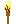
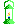
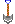
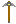
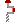
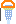
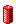
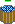
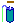

|  |
Kè
Maèkni A pro nákup louèe.
Tento dùmyslný zdroj svìtla využívající technologie chemického spalování pryskyøice
se tìšil oblibì již v pravìku, na práci v podzemí však není pøíliš vhodný - spaluje
totiž vzácný kyslík. Navíc nevydrží dlouho a mùže zpùsobit výbuch metanu. Poøád však
lepší tìžit pøi louèi než potmì.
|
|  |
Kè
Maèkni B pro nákup lampy.
Lihová lampa, lidovì petrolejka, je celkem solidním svítídlem. Tento hornický
speciál je pro maximální bezpeènost upraven tak, aby nemohl zpùsobit výbuh metanu.
|
|
Kè
Maèkni C pro nákup halogenové lampy.
Halogenová lampa dává jasné ostré svìtlo. Jeho neutrální barevné ladìní napodobující sluneèní záøení
neunavuje oèi a umožòuje vidìt horniny pravých barvách (TrueColor). Poøízení halogenu je ponìkud nákladné,
je však možno dokupovat baterie, investice se tedy èasem urèitì vyplatí.
| |
|
Kè
Maèkni D pro nákup akumulátorù do halogenové lampy.
Akumulátor umožòuje opakované použití halogenové lampy bez nutnosti nákupu další.
| |
|  |
Kè
Maèkni E pro nákup lopaty.
Tzv. lopata je nástroj pracující na principu páky. Pøenáší najednou až pìt kg zeminy. Na dùlní práci
je však nevhodný a obvykle mají lopatu v oblibì pouze cizokrajné pomocné síly.
|
|  |
Kè
Maèkni F pro nákup krumpáèe.
Pøekotný vývoj moderní doby nahradil lopatu pro její špatnou použitelnost k narušování tvrdších struktur
krumpáèem. Tento jednomužný nástroj jistì urychlí práci, na skálu však ještì nestaèí.
|
|  |
Kè
Maèkni G pro nákup vrtáku.
Vrták umožnuje odstranìní skály pøekážející Partì Hic - práce nic v cestì za pøírodním bohatstvím.
Tato metoda je však pomìrnì neúèinná a èasovì nároèná.
|
|  |
Kè
Maèkni H pro nákup sbíjeèky.
Poslední technická revoluce v dobývání nerostného bohatství - vynález sovìtských vìdcù
Pneumatovova a Klaïivova, po nichž je pojmenován jako "pneumatické kladivo", narušuje
skálu asi takovou rychlostí, jako by do ní bušilo krumpáèem dvacet mužù najednou. S tímto
technickým skvostem mùze úderník dosáhnout plnìní plánu i na 4500% !
|
|  |
Kè
Maèkni I pro nákup dynamitu.
Alfred Nobel dal imperialistùm do rukou mocnou zbraò v podobì tøaskaviny na bázi TNT.
Sovìtští mírotvorci však odhalili i možnost jeho použití tam, kde je tøeba síla velká -
a nevádí, že nespoutaná - v dùlnictví. Roztrhá na mraky skálu v dosahu dvou - tøí blokù.
|
|  |
Kè
Maèkni J pro nákup kbelíku.
Stará dobrá cesta na tansfer vody. S námahou, ale jistì pøenesete deset litrù vody.
|
|  |
Kè
Maèkni K pro nákup pumpy.
Levnì a rychle pøeèerpá X litrù vody z místa A do místa B.
|